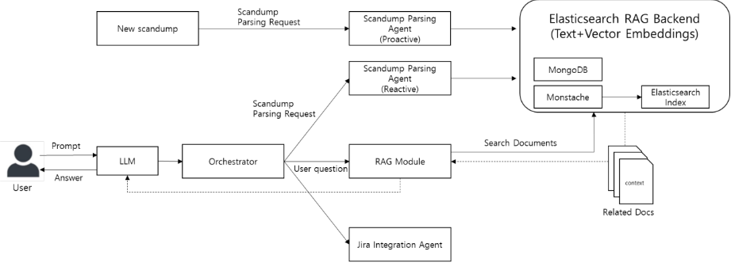

基于 Elasticsearch 的可扩展 Post-Silicon 调试自动化 AI Agent 框架
论文针对 post-silicon 调试瓶颈：工程师需手工解析 scandump 等原始二进制数据，依赖分散的 per-block 解析脚本与个别专家经验，且 issue 跨团队流转时解析流程被重复执行，造成组织级复合延迟。方法上提出由 LLM 编排的多 Agent 对话式框架：Scandump Parsing Agent 封装组织内既有解析脚本，将异构输出规范化为统一结构化报告；核心是基于 Elasticsearch 的 RAG 模块，在同一查询中原生融合 BM25 关键词检索与 kNN 向量语义检索，兼顾寄存器名/错误码精确匹配与故障症状语义理解；Jira Integration Agent 完成自动建单与历史 issue 关联，LangGraph 负责自然语言任务路由。关键结论：Time-to-First-Insight 从约 10 分钟降至约 5 秒（感知等待时间降低 99.2%）；在 50 条真实调试查询基准上，Hybrid 检索在混合类查询 Recall@5 达 88%，优于任一单模态方法；10 名工程师焦点小组定性反馈确认了 recurring issue 调试提速与知识民主化价值。该架构与团队 2.7 域的 AI/agent 辅助流程和 JAMA/issue 系统自动化方向直接同构。
Post-silicon 调试是 SoC 开发中最不可预测的瓶颈之一：scandump 提供芯片完整寄存器快照但极难解读，分析依赖分散的 per-block 解析脚本、手工启发式和个别专家的 siloed 经验；当 issue 在团队间流转（如从 CPU owner 移交到 Bus Interconnect owner）时，新 assignee 必须重新下载同一 scandump 并重跑解析-分析-记录全流程，形成串行重复劳动；历史调试知识未被系统性沉淀和复用。
构建以 LLM 为 Orchestrator 的多 Agent 框架：(1) Scandump Parsing Agent 不重写解析逻辑，而是封装既有 per-block 脚本，以 proactive（后台异步，Jira 建单即触发）与 reactive 两种模式将异构输出规范化为统一结构化文本，实现 Parse Once, Use Many；(2) 核心是基于 Elasticsearch 的 RAG 模块，mapping 中 project/block_name 等元数据映射为 keyword 做精确过滤，summary_text 映射为 text 走 BM25 倒排索引，embedding 映射为 1024 维 dense_vector（HNSW）走 kNN 语义检索，单次查询统一两种模态；(3) LangGraph 作为有状态多 Agent 编排引擎，解释自然语言 prompt 并决定执行路径；(4) Jira Integration Agent 在根因定位后自动建单、追加相关历史 issue，形成调试闭环。
Time-to-First-Insight（从决定调查 scandump 到解析数据就绪的延迟）由传统流程每份约 10 分钟的同步阻塞降至约 5 秒近即时检索，感知等待时间减少 99.2%；Parse Once, Use Many 消除跨团队重复解析的冗余计算
50 条真实调试查询的 Recall@5 基准：Hybrid 检索在 Hybrid Queries 上达 88%，显著优于两种单模态方法；保留 BM25 在 Keyword Queries 的峰值 98%，Semantic Queries 上达 78%（接近纯向量）；对比之下 Vector-only 在 Keyword Queries 仅 42%，Keyword-only 在 Semantic Queries 仅 34%
10 名工程师焦点小组定性反馈：对历史数据中存在相似模式的 recurring issue，预期 time-to-debug 显著缩短；初级工程师可独立解决复杂问题（知识民主化）；Jira 自动集成与上下文关联减少了手工文档工作
相对已有工作的区别：(1) 不同于 pre-silicon 仿真日志的被动异常检测/黑盒分类器，本文构建交互式对话系统，支持工程师主动查询历史、追问并迭代缩小问题空间；(2) 不同于基于纯向量数据库（Milvus、Pinecone）的 RAG，利用 Elasticsearch 原生混合检索（BM25+kNN）统一满足硬件调试数据对语义理解与精确标识符匹配（如 ERR_STATUS_REG、0xDEADBEEF）的双重要求，更精确、可扩展且运维更简单；(3) Parsing Agent 采用封装既有脚本而非重写解析逻辑的路线，将一次性解析结果转化为可索引的持久知识资产。
相关度级别：high
命中能力域：2.7 CyberSec/自动化
理由：直接命中 2.7 域 'AI/agent 辅助 DFT 流程' 的核心技术：LLM 多 Agent 编排、RAG 知识库构建、issue 系统（Jira）集成自动化，与团队已有的 JAMA API、Data Source 到 FMEDA/DFMEA/JAMA export 自动化、DFT sign-off checklist 工作高度同构。论文对调试数据'语义理解 + 精确关键词'双重特性的刻画，以及 Parsing Agent 封装既有脚本、Parse Once Use Many 的设计，可直接迁移到团队日志/报告密集型场景。论文本身不涉及 DFT/ATPG/功能安全的具体技术，故不命中 2.1~2.6，但其架构是团队 2.7 自动化能力的方法论升级，且论文明确指出可扩展到 pre-silicon 验证环境（UVM testbench 产出 summary.json），为覆盖团队前端验证与 DFT 流程留出接口。
建议动作：深入精读并做内部分享
摘要 - 流片后调试（post-silicon debug）仍然是一个关键瓶颈，通常需要工程师手动分析扫描转储（scandump）等原始硬件数据。本文提出了一种新颖的对话式人工智能（AI）系统，可自动化整个调试工作流程。该系统的核心是由一个大语言模型（Large Language Model, LLM）编排的一套专门智能体，包括扫描转储解析智能体（Scandump Parsing Agent）、基于 Elasticsearch 的检索增强生成（Retrieval-Augmented Generation, RAG）模块，以及 Jira 集成智能体（Jira Integration Agent）。与纯向量搜索方案不同，我们的方法利用了 Elasticsearch 的混合搜索能力，这对于既需要语义理解又需要精确关键词匹配的调试数据而言至关重要。这确保了一次捕获的知识能够得到有效复用。早期试点部署表明，调试耗时（time-to-debug）显著降低、历史专业知识更易于获取，并且能够无缝集成到既有工作流程中。
随着现代片上系统（System-on-Chip，SoC）设计复杂度的持续攀升，流片后验证与调试已成为半导体开发生命周期中最重要且最难以预测的瓶颈之一 [1]。工程师需要分析海量且异构的数据产物，包括内核日志、系统跟踪和寄存器转储，以定位硬件故障的根本原因。
在这些数据产物中，扫描转储（scandump）尤为关键。扫描转储提供了芯片在特定时钟周期下整个寄存器组的完整底层快照，通常以原始二进制格式捕获。尽管其完整性极具价值，但众所周知，若不具备深厚的先验专业知识，这类原始数据极难解读。分析工作往往依赖于零散分布的逐模块解析脚本、人工启发式规则，以及个别领域专家彼此孤立的经验积累 [2]。
这种传统方法面临若干关键挑战：
为应对这些挑战，我们提出了一种对话式人工智能（AI）框架，将解析、历史分析与工作流集成统一在单一交互界面之下。该系统作为一个从历史数据中学习的端到端调试助手运行。我们工作的核心创新在于基于 Elasticsearch [4]（一种分布式搜索与分析引擎）的检索增强生成（Retrieval-Augmented Generation，RAG）[3] 模块。我们认为，调试数据具有双重特性，既需要语义理解（例如：“系统为什么会挂起？”），也需要精确关键词匹配（例如：“查找 PCIE_LNK_STATUS 为 0x01 的案例”）。我们利用 Elasticsearch 原生的混合搜索能力——它将传统文本搜索与基于向量的相似度相结合——来满足这一需求，提供了一种比基于纯向量数据库构建的系统更准确、更具可扩展性且运维上更简便的解决方案。
传统的 scandump（扫描转储）分析方法本质上是一个冗余的手工流程，难以随 SoC 复杂度的增长而扩展。典型的调试周期始于硬件故障被上报，并创建一个附带原始 scandump 文件的 Jira 工单。首位经办人按顺序执行以下步骤，因为每一步的输出都是下一步的先决输入：
当问题在团队之间流转时，会出现一个关键瓶颈。如果首位工程师判断根因很可能位于另一个 IP 模块中（例如，将该案例从 CPU 负责人移交给总线互连（Bus Interconnect）负责人），新的经办人就必须重复整个流程。他们必须自行从 Jira 下载同一份 scandump，并重新执行步骤 2 至步骤 4，以验证其所属模块的状态。当问题经过多人之手——从 GPU 专家到总线专家再到 CPU 专家——这种数据处理上的串行重复会在整个组织范围内造成不断叠加的延迟和大规模的重复劳动。
将机器学习（ML）和人工智能（AI）应用于硬件验证的研究兴趣日益增长 [5]。其中大部分工作侧重于利用 ML 进行流片前（pre-silicon）日志分析，例如对仿真日志进行异常检测，或对测试失败进行自动分类。这些方法对于从海量数据集中被动识别潜在问题具有重要价值。然而，这些系统往往充当黑盒分类器，仅标记出问题，却不提供深入根因分析所需的交互式上下文。我们的工作与之不同，其重点不是被动式异常检测，而是构建一个交互式、对话式的系统。我们旨在赋能调试过程中的工程师，使其能够主动查询历史数据、提出后续问题并迭代地缩小问题空间，而不仅仅是查看预先计算好的异常评分。
检索增强生成（RAG）是一种通过在生成响应之前从外部知识库中检索相关文档来提升大语言模型（LLM）准确性的框架。该方法通常依赖于专门的向量数据库，例如 Milvus [6] 和 Pinecone [7]，它们使用高维嵌入（embedding）执行语义相似度搜索。
然而，纯向量搜索往往难以满足硬件调试数据的高精度要求。为解决这一问题，我们在 Elasticsearch 中采用了混合搜索（Hybrid Search）策略。该策略将用于语义上下文的 k 近邻（kNN）搜索 [8] 与用于文本精度的最佳匹配 25（BM25）[9] 算法相结合。BM25 是一种复杂的排序函数，搜索引擎利用它基于关键词频率和饱和度来估计文档与给定搜索查询之间的相关性。kNN 能够找到概念上相关的问题（例如 "system hang"（系统挂起）与 "stuck"（卡死）），而 BM25 则确保诸如寄存器名称（ERR_STATUS_REG）或特定错误代码（0xDEADBEEF）之类的精确标识符得到优先匹配。通过统一这两种模态，我们的框架在准确性方面实现了协同提升。
为了管理工程师与专用工具之间的交互，系统需要一个编排层。我们采用 LangGraph [10]，这是一个专为构建基于大语言模型（LLM）的有状态多智能体应用而设计的库。虽然解析原始数据这类重复性的底层任务（如第 II-A 节所述）由 Scandump Parsing Agent 执行——通常以自主、主动的模式运行——但 LangGraph 则充当面向用户驱动的响应式任务的决策引擎。它解析自然语言提示以确定最优执行路径，例如触发特定的分析流程或检索历史数据，从而确保工程师与自动化后端之间的无缝衔接。
我们的系统被设计为一个由中央 LLM 统一编排的多智能体框架，如图 1 所示。LLM 负责解析工程师的自然语言提示，并将任务动态路由至各个专用智能体。

LLM 编排器作为系统的中央“大脑”。该编排器基于 LangGraph 等框架构建，负责维护调试会话的状态，并根据用户意图智能地调用相应的智能体。例如，诸如“解析这个新的 scandump 并查找类似问题”这样的提示词，将触发依次调用解析智能体（Parsing Agent）、随后调用检索增强生成（RAG）模块的执行流程。
Scandump 解析智能体旨在通过集中管理调试工件的执行与存储，消除第 II-A 节所述的冗余周期。该智能体并非从零开始开发新的解析逻辑，而是充当一个智能封装器，围绕组织内既有的、面向特定领域的解析脚本进行工作。它将执行环境标准化，以捕获这些异构脚本的原始输出，并将其规范化为统一的结构化文本格式。该智能体以两种不同的执行模式运行，以确保自动化与交互性兼备：
在上述两种模式下，该智能体均将异构输出整合为统一的结构化文本报告。尽管解析智能体专注于数据转换而非自主的根因分析，但它作为关键基础设施，能够将不透明的二进制工件转换为 LLM 可读的知识库。通过这一方式，它有效消除了困扰传统工作流的手工数据准备瓶颈，并为后续的 RAG 与编排流程提供了必不可少的“燃料”。该过程将瞬态的执行日志转化为持久的、可索引的资产，使工程师能够主动查询当前故障，并将其与 RAG 系统中存储的历史模式进行比对。
该模块是我们框架的核心知识产权。它负责为 Scandump 解析智能体生成的全部预分析、模块级报告建立索引。
兼顾架构层面的精确性与症状层面的模糊性：
示例：REG_NAME: "ERR_STATUS"、ERROR_CODE: "0xDEADBEEF"、BLOCK: "BLK_AUD"
纯向量数据库无法满足将关键词作为一等公民处理的需求。我们的模块利用 Elasticsearch 的原生能力，在单一统一查询中将传统 BM25 倒排索引（用于关键词）与稠密向量索引（用于语义）结合起来。
为了实现混合检索，我们设计了一条健壮的数据流水线，将主存储与搜索索引分离，从而同时保证数据完整性与实时搜索能力。
{ "mappings": { "properties": { "project": {"type": "keyword"}, "revision": {"type": "keyword"}, "block_name": {"type": "keyword"}, "summary_text": {"type": "text"}, "embedding": { "type": "dense_vector", "dims": 1024, "index": "hnsw" } } } }
这一映射至关重要：像 project 这样的元数据字段被映射为 keyword，以实现快速的精确匹配过滤。summary_text 被映射为 text，以利用 BM25 算法。最后，embedding 被映射为 dense_vector，以支持 k 近邻（k-Nearest Neighbor, kNN）语义搜索。
我们的检索策略旨在将工程师的自然语言查询转换为精确的 Elasticsearch 查询，执行该查询，并将结果传递给 LLM 进行综合。
{ "query": { "bool": { "filter": [ {"term": {"project": "Project1"}}, {"term": {"block_name": "BLK_CPU"}} ], "should": [ { "match": { "summary_text": { "query": "Uncorrectable ECC error" } } }, { "knn": { "field": "embedding", "query_vector": [0.23, ..., -0.11], "k": 10, "num_candidates": 50 } } ], "minimum_should_match": 1 } } }
与采用独立向量数据库构建相比，我们获得了若干实际优势：
为了闭合调试闭环，该智能体提供了与项目问题跟踪系统（如 Jira）交互的 API 接口。在根因被确定后，LLM 可以指示该智能体“为 CPU 团队提交一张包含这些发现的工单”，或“将这些相关的历史问题（JIRA-123、JIRA-456）附加到当前工单中”。
我们使用一个源自下一代 SoC 流片后调试阶段试点项目的数据集对该框架进行了评估。
鉴于对复杂交互式调试工作流进行定量基准测试所面临的挑战，我们通过一系列示例性检索场景评估了系统的有效性。这些场景旨在测试框架处理工程师所遇到的各种查询类型的能力。
该场景测试系统处理精确匹配精度至关重要的查询的能力。
该场景测试系统处理模糊的高层概念性查询的能力。
该场景测试系统的主要能力：将通过元数据过滤实现的架构精确性与对失效症状的语义召回相融合。
定性反馈：
虽然示例性检索场景突出了系统以受控方式处理不同查询类型的能力，我们还从由10名工程师组成的焦点小组收集了定性反馈，这些工程师使用历史调试案例与系统进行交互，以评估其在实际调试工作流中的潜在有效性。总体而言，反馈是积极的，并证实了场景中所展示的价值：
- 调试时间（Time-to-Debug）缩短：对于历史数据中存在相似模式的重复性问题，工程师预计调试时间将显著缩短，并指出该系统本可快速呈现相关的历史先例。
- 知识民主化：初级工程师报告称，他们能够通过查询系统并获取来自过去调试会话的上下文信息来独立解决复杂问题，从而减少了对资深专家的依赖并加速了他们的学习过程。
- 工作流效率：自动化的 Jira 集成与上下文关联获得了积极反馈，因其减少了与跟踪和更新问题相关的手动文档工作。
C. 定量效率分析：主动解析的影响
为了量化该框架的运行影响，我们测量了“首次洞察时间”（Time-to-First-Insight），其定义为从工程师决定调查某个 scandump 到解析后的数据可供分析之间的延迟。我们将传统的按需（On-Demand）工作流与我们框架的主动（Proactive）模式进行了比较。
在传统工作流程中，每次 scandump 都会产生约 10 分钟的同步阻塞时间，因为工程师必须手动执行解析脚本。此外，在多团队调试场景中（例如从 CPU 团队交接至 Bus 团队），这一成本往往会被重复付出，因为每位新的接手者都会重新运行该流程。相比之下，我们的 Scandump Parsing Agent 以异步方式运行。当工程师打开 Jira 工单时，该智能体已经在后台检测到文件并完成了解析。因此，工程师体验到近乎即时的检索时间，约为 5 秒。这种主动执行模型将延迟从工程师工作流程的关键路径转移到了异步后台进程，使感知等待时间减少了 99.2%。此外，“Parse Once, Use Many”（一次解析、多次使用）范式消除了冗余的计算周期。表 I 总结了这些效率提升。
| 0 | 1 | 2 | 3 |
|---|---|---|---|
| Metric | Traditional Workflow (On-Demand) | Proposed Framework (Proactive) | Improvement |
| Parsing Model | Synchronous / Manual | Asynchronous / Automated | - |
| Actual Compute Time | ~10 minutes | ~10 minutes | (Same) |
| User Wait Time (Latency) | ~10 minutes | < 5 seconds | ~99.2% Reduction |
| Redundancy (3 Engineers) | 30 minutes (10m x 3) | 10 minutes (10m x 1) | 66% Compute Saving |
| Data Accessibility | Local / Siloed | Centralized / Shared | - |
| 0 | 1 | 2 | 3 |
为验证所提出的混合检索策略的有效性，我们开展了一项基准测试，对比了三种检索方法：仅关键词检索（BM25）、仅向量检索（Embedding）以及我们的混合（Hybrid）方法。我们精心构建了一个包含 50 个代表性查询的测试集，这些查询源自实际调试场景，并测量了 Recall@5——即正确的历史解决方案出现在前 5 个结果中的比率。
测试查询被划分为三种不同的类型：
如表 II 所示，单模态检索在特定的硬件调试场景中表现出固有的局限性。向量检索在关键词类查询（Keyword Queries）上表现不佳（42%），这是因为嵌入向量难以区分精确的字母数字标识符。相反，关键词检索在语义类查询（Semantic Queries）上表现欠佳（34%），其原因在于词汇不匹配。然而，混合检索在所有类别上都展现出了稳健性。它有效保留了 BM25 在关键词类查询上的峰值性能（98%），并十分接近向量检索在语义类查询上的性能（78%）。最重要的是，它在混合类查询（Hybrid Queries）上显著优于两种单独的方法（88%），而混合类查询代表了最常见且最复杂的真实调试场景。
| Query Category | Keyword Search (BM25) | Vector Search (Embedding) | Hybrid Search (Proposed) |
|---|---|---|---|
| Keyword | 98% | 42% | 98% |
| Semantic | 34% | 80% | 78% |
| Hybrid | 60% | 66% | 88% |
| Overall Average | 64% | 62.7% | 88% |
| Query Category | Keyword Search (BM25) | Vector Search (Embedding) | Hybrid Search (Proposed) |
V. 讨论与未来工作
初步实验表明，所提出的框架通过结构化数据和实现上下文感知检索，有潜力简化流片后调试流程。尽管完整验证仍在进行中，但初步部署已经证明，知识可以在芯片点亮与分析的不同阶段被系统地积累和查询。
然而，仍存在若干局限性。当前的 Scandump Parsing Agent 高度依赖遗留解析脚本的质量与维护，这可能导致摘要不完整或不一致——这是典型的“垃圾进，垃圾出”（garbage in, garbage out）局限。此外，检索增强生成（RAG）组件的有效性受限于被索引数据的完整性和质量，这表明需要更加自动化、更加智能的数据预处理。
未来工作将聚焦于以下方向：
我们计划研究利用大语言模型（LLM）及其他机器学习技术直接解析原始 scandump 数据。该方向旨在减少对遗留脚本的依赖，并通过在无需显式解析规则的情况下识别异常寄存器值，实现主动式异常检测。
当前的 RAG 系统将被扩展以纳入多样化的数据源，例如内核日志、trace 输出以及波形数据（如 FSDB/VCD）。为 LLM 提供更丰富的多模态上下文，可能增强其生成更准确、更可解释的洞察的能力。
一个重要的未来方向是将该框架应用于流片前验证环境。当前架构基于标准化的摘要工件（summary artifact）运行，这为其直接扩展提供了显著优势。基于仿真的环境（如 UVM 验证平台）可以通过插桩，在测试完成或失败时生成等价的摘要输出（例如 summary.json）。
这一扩展将带来两大益处：
通过标准化数据接口，该方法能够有效弥合流片前调试与流片后调试之间的鸿沟，促进知识共享，并减少各验证阶段中重复的调试工作。
本文提出了一种新颖的对话式 AI 智能体框架，旨在实现关键流片后调试工作流的自动化与规模化。我们提出了一种由大语言模型（LLM）协调多个专用智能体的系统，以统一数据解析、历史知识检索与工作流集成。该系统的核心是一个构建于 Elasticsearch 之上的混合检索增强生成（RAG）模块，用于对海量、异构的调试数据进行结构化处理与查询。
本工作的核心贡献在于这一基于 Elasticsearch 的混合检索 RAG 架构的设计与应用，该架构特别契合硬件调试数据的双重特性。我们证明了调试分析既需要向量检索的语义理解能力，也需要关键词检索的高精度。我们的框架在单一且运维简便的平台上有效统一了这两种检索模态，克服了纯向量检索方案的局限性。
通过应用这一核心 RAG 引擎，我们的框架直接解决了主要瓶颈：对扫描转储（scandump）的重复性人工解析。它将孤立分散的脚本输出转化为可查询、可复用的知识库。这使工程师的角色从人工数据处理者转变为高层分析者，显著缩短了调试周期（time-to-debug）。正如我们的评估所展示的，该方法提供了一条切实可行且可扩展的部署路径。展望未来，该架构向流片前环境扩展的潜力，预示着构建覆盖整个半导体生命周期的统一、知识驱动调试平台的光明前景。